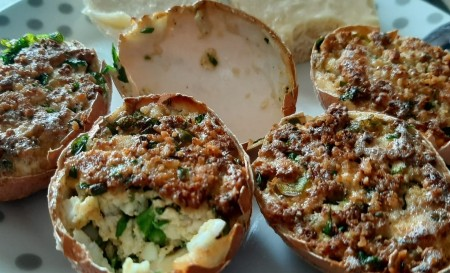

Domowa Kuchnia Kasi
START
Na Słodko
Muffinki
Tiramisu z nutellą
Ciasteczka na smalcu
Ciasto na maślance
Sernik z rosą
Ciasto owocowe z migdałami
Karpatka
Pieczywo
Ciastka cebulowe
Bułeczki jogurtowe
Chleb domowy
Potrawy mięsne
Potrawy z ryb
Śledzie w marynacie
Potrawy vege
Placuszki z kaszy mannej
Placki z serem ricotte
Jajka faszerowane
PRZEPISY

Jajka faszerowane